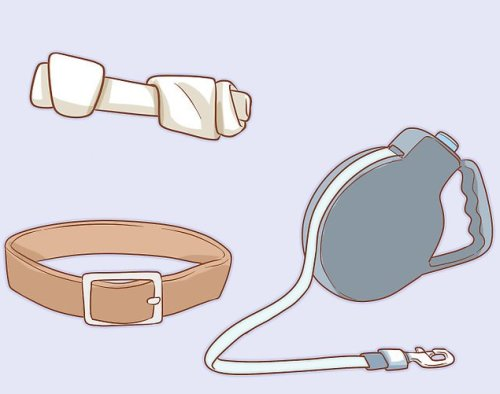
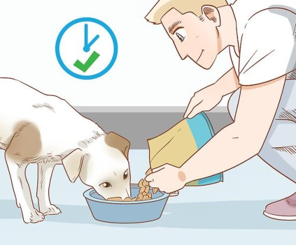
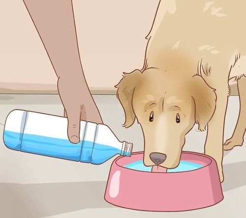
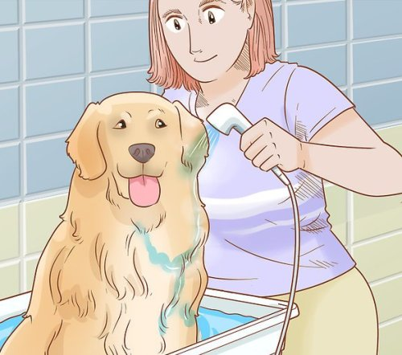
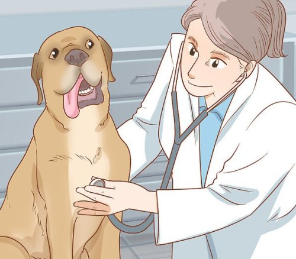
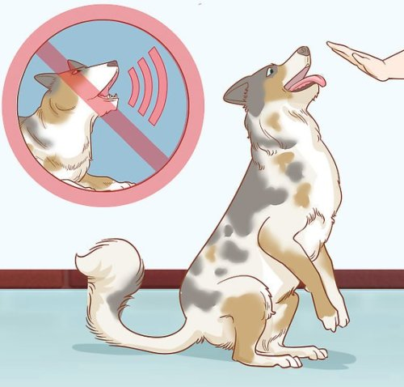

Думаете завести дома собаку? Собаки – преданные и любящие друзья и, как правило, отдают нам намного больше, чем мы им даем. Однако, чтобы они хорошо себя чувствовали и были здоровы, им требуется хороший уход. Если вы планируете завести собаку у себя дома, то для обеспечения длительных и здоровых отношений нужно многое принять к вниманию.
Сделайте ваш дом безопасным для собаки. Хотя многие вещи могут показаться безобидными для вашей собаки или вы не ожидаете, что она может заинтересоваться ими, все же лучше держать мелкие предметы и человеческие игрушки не на полу, вне зоны досягаемости вашей собаки, где она будет проводить время. В вашем доме и во дворе есть множество продуктов, опасных для собак , которые должны храниться подальше от них и запираться в специальных местах для хранения или там, где у собаки не будет к ним доступа. К самым распространенным из них относятся бытовые чистящие средства, инсектициды, удобрения и отрава для мышей и крыс. Как комнатные, так и растения, растущие во дворе, могут оказаться токсичными, в том числе рододендрон, хризантемы, олеандр. Чтобы получить полный список токсинов, опасных для домашних животных, выясните, какие растут у вас дома и в саду, и обратитесь к ветеринару, или к сайтам в сети наподобие ASPCA (Американского общества предотвращения жестокости по отношению к животным) и горячей линии помощи домашним животным. Кроме того, токсичными могут быть лекарственные препараты, как для людей, так и для животных, особенно при употреблении их в больших количествах. Некоторые из продуктов, которые мы едим, в том числе шоколад, лук, изюм и виноград, и даже жевательная резинка без сахара, токсичны для собак и должны храниться вне их досягаемости.
Приобретите все необходимое для собаки. Кое-что уже будет иметься у вашей собаки, но вам понадобится подходящий по размеру ошейник, поводок и пара игрушек для начала. Кроме того, вам понадобятся чашки для еды и воды, ну и сама еда. Если вы знаете, чем питалась ваша собака, лучше всего продолжать кормить ее той же самой едой, хотя бы поначалу. Приход в новый дом может оказаться стрессом для любой собаки и изменения в ее рационе могут еще больше усугубить этот стресс. Если вы решили изменить ее питание, вы это можете сделать, но убедитесь, что делаете это постепенно, в течение 5-7 дневного периода времени. Это поможет вам избежать таких проблем, как диарея или расстройство желудка, которые могут появиться в результате резкой смены характера питания.
Купите корм, содержащий ингредиенты высокого качества. Также вы можете сами готовить собачью еду. Не кормите собаку сахаром в большом количестве, жареным и другими лакомствами для людей. Это со временем навредит здоровью вашей собаки. НИКОГДА не давайте собаке шоколад. Как правило, крупные породы собак до годовалого возраста следует кормить смесью для щенков крупных пород. Затем их следует переводить на взрослый рацион до достижения возраста шести лет, после чего рацион меняется на корм для старших собак. Мелкие и средние породы нужно кормить смесью для щенков приблизительно до одного года, затем менять рацион на взрослый.
Кормите собаку согласно расписанию. У разных собак различные потребности, когда дело касается еды. Если возраст собаки в пределах одного года, ей нужно несколько приемов пищи в день. Для большинства собак в возрасте около шести месяцев можно снизить количество до двух раз в день. С возрастом для собак считается нормальным есть только один раз в день, поскольку они становятся менее активными. Старайтесь кормить собаку в одно и то же время каждый день. Это поможет собаке распознавать время еды и поможет вам понять, сколько ест собака. Это очень важно, если вы пытаетесь приучить собаку проситься, если наблюдается снижение аппетита и для профилактики ожирения.
Обеспечьте наличие воды все время. Важно держать чашку вашей собаки всегда наполненной свежей водой. Собакам нужно пить, когда они испытывают жажду и не будет никакого вреда, если они будут пить столько, сколько захотят. Можете положить в воду несколько кубиков льда, чтобы в жаркую погоду она оставалась приятной и холодной.
Следите за гигиеной и внешним видом вашей собаки. Разным породам собак требуется различный подход по уходу за их внешним видом. В целом, собак нужно расчесывать один раз в неделю или около того, чтобы им было проще линять. Длинношерстным собакам нужно более частое расчесывание, чтобы их шерсть не запутывалась, а также им может понадобиться регулярная стрижка. Некоторым породам летом жарко, и они чувствуют себя лучше побритыми, когда на улице начинает теплеть. Определите, какой характер регулярных процедур по уходу за шерстью и когтями собаки лучше всего подойдет вашему питомцу. Во время расчесывания проверяйте наличие блох и клещей и удаляйте их с помощью специальной расчески. Может понадобиться качественный препарат по профилактике блох от вашего ветеринара
Купайте собаку каждые две недели. Собаки не нуждаются в душе так же часто, как люди, однако, когда появляется запах или они вывалялись в грязи и другом мусоре, их обязательно нужно купать. Старайтесь использовать теплую воду и натуральный, мягкий шампунь, предназначенный специально для собак, который не будет раздражать их кожу. Собаки любят побегать после купания, поэтому вам следует выбрать для этого время, так, чтобы после купания собака могла побегать на улице. Купание и расчесывание полезны, чтобы помимо всего своевременно заметить порезы или ушибы у собаки, которым нужна медицинская помощь.
Убедитесь, что собака получает плановый ветеринарный уход. Регулярные осмотры ветеринара помогут предупредить и вовремя выявить проблемы. Обычные посещения ветеринара включают физический осмотр, анализ кала и анализ на сердечных гельминтов. Кроме того, ветеринар может посоветовать сделать анализ крови для выявления основных проблем, которые еще не обнаружены и легче лечатся, если их выявить как можно раньше. В числе общих препаратов, рекомендованных вашим ветеринаром, могут быть профилактика сердечного гельминта, регулярная дегельминтизация и профилактика блох и клещей, в зависимости от времени года и местности, в которой вы проживаете. Убедитесь, что ваша собака получила все необходимые прививки. Это поможет поддерживать ее хорошее самочувствие и здоровье. Стандартный план вакцинации для собак включает прививку от бешенства, которая делается в 12-недельном возрасте или старше, затем каждые 1-3 года согласно местным законам и рекомендациям ветеринара. Противочумная, парвовирусная и прививка от гепатита, как правило, делаются вместе. Щенки, начиная с шестимесячного возраста, должны получить четыре прививки каждые три недели, а затем ежегодно, как взрослые, опять же основываясь на рекомендациях вашего ветеринара.
Приучайте собаку к выгулу. Когда вы приводите маленького щенка или взрослую собаку в свой дом, первым делом нужно научить ее справлять нужду на улице, а не в помещении. С помощью правильной методики можно приучить собаку любого возраста. Пока приучаете, существует несколько правил, соблюдение которых поможет в данном процессе. Ограничьте зоны, к которым собака может иметь доступ таким образом, чтобы была возможность внимательно следить за признаками того, что она вот-вот сходит, и немедленно ее вывести. Составьте график выгула, который будет включать в себя выгул первым делом утром, после еды, каждый раз, как вы приходите домой и прямо перед сном. Щенков нужно выгуливать чаще, пока они молоды и, как правило, они могут терпеть на час дольше с каждым месяцем взросления. Держа собаку на поводке, даже в помещении, вы сможете наблюдать за ней более внимательно, пока она не приучена. Кроме того, выгуливая, держите ее на поводке, чтобы приучить ходить в специально отведенных местах и быть уверенным, зная, что она уже сходила. Чтобы приучить ходить в специально отведенное место, можно использовать какое-то слово, например «ходи». Если вы поймаете момент, когда она начинает делать это дома, скажите ей «нельзя», выведите на улицу и скажите «ходи». Всегда хвалите ее, когда она сходила туда, куда положено. Если случайно собака сходила в туалет дома, обязательно тщательно вымойте этот участок, чтобы она не захотела снова ходить в это место. Никогда не шлепайте и не ругайте собаку за то, что она сходила в туалет дома. Она только станет бояться вас.
Приучите собаку не лаять слишком много. Лай – это нормальное занятие для собак и одна из форм их общения, но слишком много лая является раздражающим, и это хотели бы исправить многие владельцы собак. Есть много различных типов лая, и для того чтобы справиться с проблемой, некоторым из них требуются очень специфичные действия. Это, как правило, медленный и постепенный процесс, который тоже требует много терпения. Есть несколько общих принципов для обучения вашей собаки не лаять по любому поводу. Выявление факторов, которые являются причиной их лая, и затем их устранение, например, закрыть шторы или посадить их в место, где они не видят, на кого или что лают – является правильным первым шагом. Если собака не прекращает лаять, заведите ее в тихую комнату или посадите в конуру без ничего и дайте ей успокоиться. Вознаградите ее, как только лай прекратится. Естественным инстинктом является кричать на собаку, если она лает, но это заставляет собаку думать, что вы лаете вместе с ней. Если ваша собака навязчиво и бесконтрольно лает, попробуйте увеличить физические нагрузки и продлить время для игр. Следует игнорировать и ни в коем случае не награждать собак, лающих для привлечения внимания, до тех пор, пока лай не прекратится. Это может быть сложным откорректировать и может потребоваться помощь обученного специалиста по поведению или тренера. Ошейники против лая должны применяться только после консультации с квалифицированным специалистом.